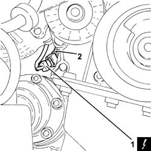

1084A46 ENGINE OIL TEMPERATURE SENDER UNIT - R + R
- Path
- Procedures > 10 ENGINE UNIT > 1084 ENGINE LUBRICATION SYSTEM > 1084A INDICATORS/CHECK DEVICES > 1084A46 ENGINE OIL TEMPERATURE SENDER UNIT - R + R
- Kind
- repair procedure (removal / refitting; the operation number is the code)
- Applies to
- engines: 3.2 V6; all production periods
- Interactive page
- https://sloeber94.github.io/elrnDB-aGt/en/#/125001152
Applies to: engines: 3.2 V6; all production periods
 Removing
Removing
 Refitting
RefittingPosition the vehicle on the ramp
Ensure that the ignition key is in the OFF position, then disconnect the negative battery terminal (-).
Name | Connector | |
|---|---|---|
- | Battery | See A1B BATTERY ( BATTERY NEGATIVE ) |
Proceed with removal
Op. 4450B04 RIGHT FRONT WHEEL R R
Proceed with removal
1. Disconnect the electrical connection from the engine oil temperature sender unit.
Op. 7055B42 LH OR RH REFLECTOR(ONE) ON REAR BUMPERS - R R
2. Undo and remove the engine oil temperature sender unit.

Applies to: engines: 3.2 V6; all production periods
Refitting
RemovingPlace the engine oil temperature sender unit in its seating and tighten it to the recommended torque.
 | Fastening | Component | Ø | Value (daNm) |
|---|---|---|---|---|
- | - | - | - | - |
Connect the electrical connection to the engine oil temperature sender unit.
Proceed with refitting
Op. 7055B42 LH OR RH REFLECTOR(ONE) ON REAR BUMPERS - R R.
Proceed with refitting
Op. 4450B04 RIGHT FRONT WHEEL R R.
Connect the negative (-) battery terminal
Remove the car from the ramps.